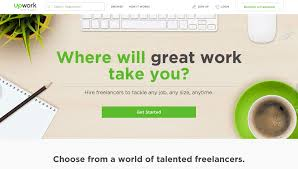

1. Online Surveys

One of the most popular way to make easy money online. What you will do is you just have to fill out online surveys. There are some companies who are recruiting people to fill out a form of survey or to test their newly made product online.
For a short period of time filling out the forms or testing the newly made product, you will get a reward or paid a cash. Here are some list of sites to visit if you want to try this one: MySurvey, SurveyBods, YouGov, PopulusLive, Global Test Market, Swagbucks.
There is nothing to worry about, just one click ahead and you will get an easy money online. These are all trusted sites.
2. Searching the web
What you are doing right now is one of the examples in this kind of job. One of the best and easiest methods to get an easy money online. All you have to do is simply search for the specified website given. That's it! search and earn money online.
Interested for this kind of job? You can have it in just a click ahead. Just sign up here and get easy money online.
3. Make your own website
If you love coding and you are creative then probably you can make your own website. All you have to do is to be familiar in making website using HTML, CSS, JAVASCRIPT and more.
Making your own website is not easy when you don't have any idea about the things I said earlier. If you are interested to learn making website, there are lots of sources online on how to make a website like: W3Schools, Codecademy, udemy, codeschool and more. You may be a millionaire someday if you build your own website and become a CEO.
Big thing starts from a small beginning.
4.Uploading videos on Youtube

Most of the time, people who use computer with internet connection watched youtube videos. And with the recently introducedYouTube Partner Program you can now profit from making and uploading videos. A percentage of the advertising revenue collected per 1,000 views will be paid to you.
Depending on how successful you are (virality, subscriber base and topic) you can make easy money online, and there are plenty of stories every week of more and more YouTubers making it their career.
For more tips read our guide to making money from YouTube.
5.Become a freelancer
A freelancer can do the job anywhere anytime as long as you have your laptop and internet connection. There are so many freelance job waiting for you . All you have to do is to sign up here: upwork. The number 1 website for freelance work. You can find millions of job everyday. You have to find the best job for you.
An easy way to get easy money online. Sign up now and become a freelancer.